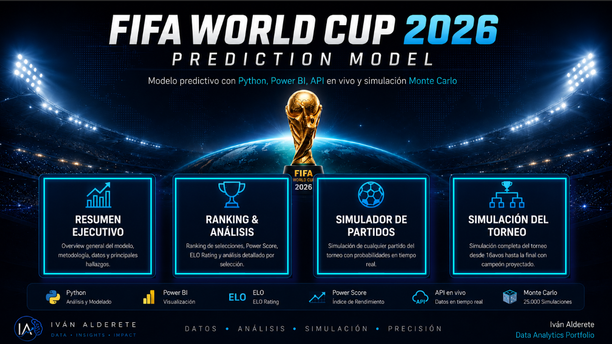

END-TO-END SPORTS ANALYTICS
From historical football data to predictive decisions.
A complete analytics platform built with Python, SQL Server and Power BI to rank national teams, simulate matches and estimate World Cup 2026 tournament probabilities.

49,472historical matches
81K+score scenarios
48World Cup teams
01
THE CHALLENGE
Turning raw sports data into a decision system.
International football data is fragmented across historical match results, rankings, team performance and tournament structure. This project integrates those sources into a reproducible analytical workflow.
The result is an analytics product that supports team comparison, match simulation, projected scorelines and tournament probabilities.
Data Engineering
Cleaning, standardization and feature preparation in Python.
Relational Modeling
Normalized facts and dimensions for reusable SQL analytics.
Predictive Analytics
ELO, Power Score and Monte Carlo simulations.
Business Intelligence
Interactive dashboards designed for clear decision-making.
02
SOLUTION DESIGN
A connected analytics architecture.

03
POWER BI EXPERIENCE
Five pages designed to explore the tournament.
Executive summary
04
TECHNOLOGY STACK
Tools used across the data product lifecycle.
Python
Pandas, notebooks, ETL and feature engineering.
SQL Server
Schema, bulk load, views and stored procedures.
Power BI
Power Query, DAX, visual storytelling and UX.
Predictive Models
ELO, Power Score, Poisson and Monte Carlo.
05
PROJECT VALUE
More than a dashboard: a documented data product.
Structured notebooks, SQL scripts and environment requirements.
Normalized tables, analytical views and documented exercises.
Models and visuals are organized around questions users can answer.